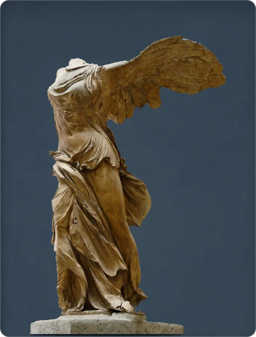

Winged Victory of Samothrace

Wind takes shape in the folds of marble
The Winged Victory of Samothrace depicts Nike, goddess of victory, alighting on a ship’s prow. Fabric clings to her body while the lifted folds suggest the force of the wind. Discovered on Samothrace in 1863, this Greek sculpture dates to 200–175 BCE. The figure is carved in Parian marble; the ship is Lartos marble. The right wing is a plaster reconstruction.
Greece, Hellenistic period · 200–175 BCE · Parian marble · Musée du Louvre, Paris · inv. Ma 2369
About the gallery
Follow the folds
Start where the fabric clings to the body, then look for the folds that lift away. The clinging fabric gives you a way to read the pose. The lifted folds carry the sense of movement beyond the figure’s outline. Notice where your eye passes from one to the other and how that change gives the drapery a direction.
Now try looking in the opposite direction. Follow one lifted fold until it meets the fabric against the body. You may notice the sweep of the cloth first and the pose second. The two routes through the sculpture show how the drapery and the figure contribute to the same impression of movement.
The figure and the ship
Look at the figure on its own and you see a body and its clothing in motion. Bring the ship into your reading and you can ask where the figure is about to find support. The prow gives the gesture a setting. It helps you read the scene as an arrival and connect the movement of the fabric to the body.
The notice distinguishes the Parian marble of the figure from the Lartos marble of the ship. Keep that distinction in mind as you move between the folds and the support. The photograph may make the two materials difficult to tell apart.
What the reconstruction changes
The right wing is a plaster reconstruction. That detail prompts two questions. What does the outline suggest as we see it today? What are its different parts made of? Your eye may travel naturally from the drapery to the wing, while the material description needs to account for the reconstruction.
Return to the drapery and try describing the folds before naming the movement they suggest. Separating the fold you can see from the wind you imagine gives you a way to explain how a detail of the sculpture creates the impression of a figure alighting.